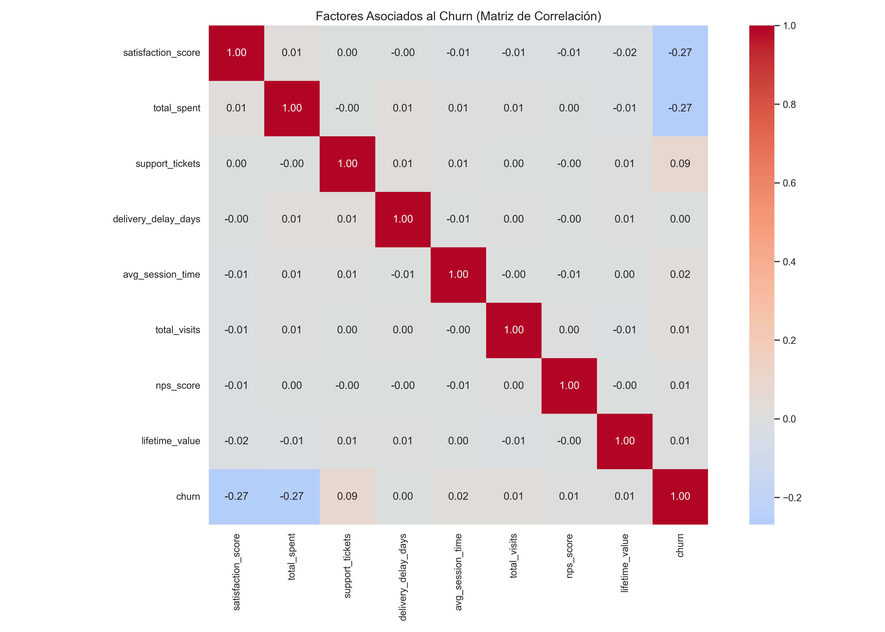
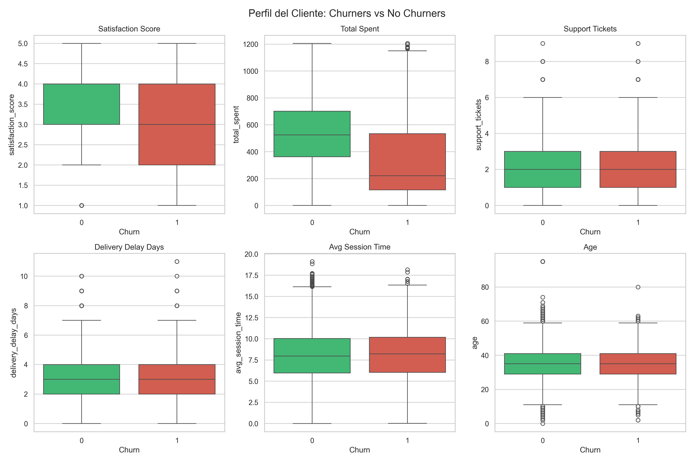
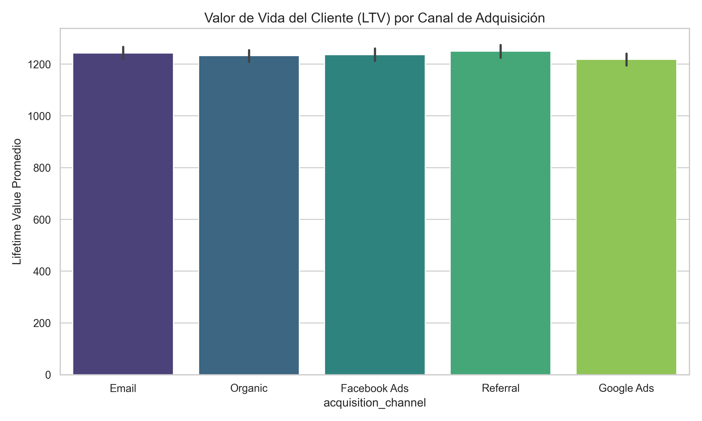
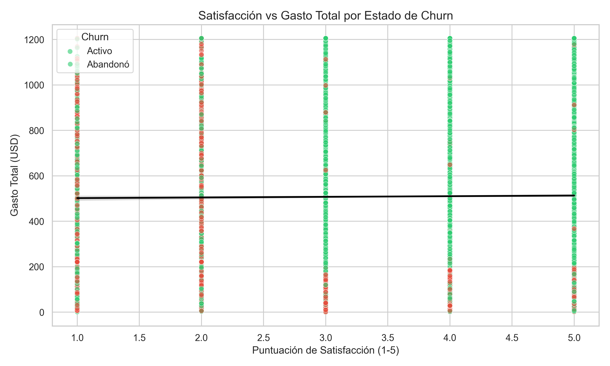
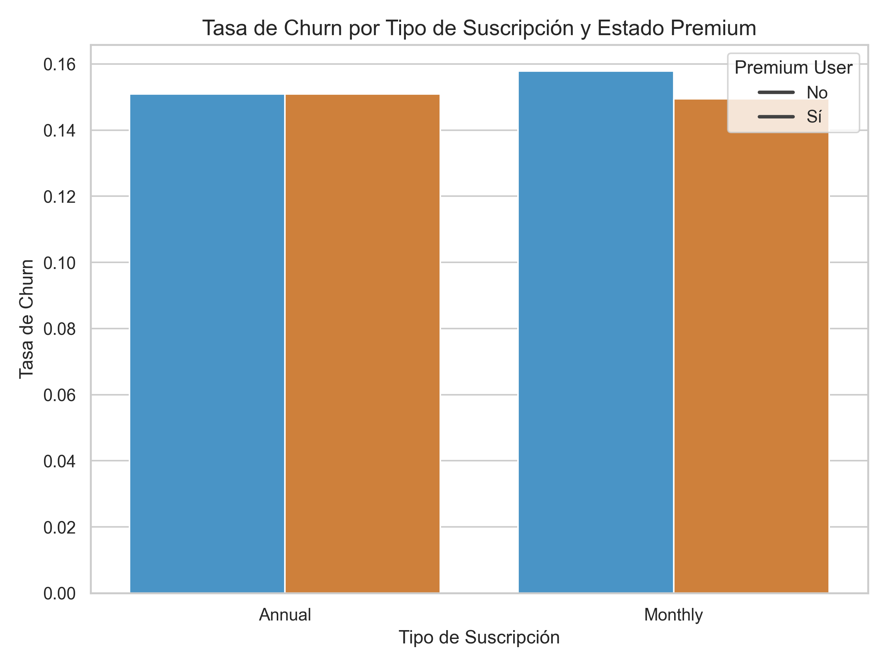

📊 Sales & Marketing Churn Analysis
La empresa enfrenta una tasa de churn (abandono de clientes) del 15%, lo que representa una pérdida significativa de ingresos recurrentes. El objetivo es identificar los factores clave que impulsan el churn y predecir qué clientes tienen mayor probabilidad de abandonar, para diseñar estrategias de retención efectivas.
- 1. ¿Por qué los clientes abandonan?
- 2. ¿Qué clientes son más propensos a abandonar?
- 3. ¿Qué canales de adquisición generan el mayor valor de vida (LTV)?
- 4. ¿Cómo impacta la satisfacción del cliente en los ingresos?
- 5. ¿Qué estrategias de marketing reducen el churn?
- Fuente: Kaggle — Sales and Marketing DataSet (Bhasker Paul)
- Filas: 15,000
- Columnas: 30
- Variable objetivo:
churn(binaria, ~85% No churn, ~15% Churn) - Problemas incluidos: valores faltantes, outliers, ruido, tipos mixtos, desbalance de clases
- Umbral Crítico: Clientes con satisfacción ≤ 2 tienen un 50% de probabilidad de abandonar (frente al 10% si es ≥ 3).
- Segmentación por Gasto: La satisfacción es mucho más relevante para clientes de alto gasto (correlación ≈ -0.38) que para los de bajo gasto (≈ -0.10).
- Efecto Directo: La satisfacción tiene un efecto directo sobre el churn (correlación parcial -0.297), independientemente del gasto.
- Sin Multicolinealidad: No hay redundancia entre predictores (>|0.7|).
- Perfil del Churner: Baja satisfacción, bajo gasto, más tickets de soporte.
- Canales de Adquisición: Todos los canales tienen LTV similar; no hay diferencias significativas.
- Estrategia Premium: Los usuarios Premium y con suscripción anual tienen menor churn.
- Prioridad: Mejorar la satisfacción reduce el churn, especialmente en clientes de alto gasto.
Las siguientes visualizaciones resumen los hallazgos más importantes del análisis exploratorio. En el Notebook 01 — Data Understanding se realizó un análisis avanzado de correlaciones que incluyó la detección de umbrales (efecto no lineal de la satisfacción), heterogeneidad por segmentos de gasto, evaluación de multicolinealidad y correlación parcial para aislar el efecto directo de la satisfacción sobre el churn. Estas gráficas son el reflejo de ese trabajo y cuentan la historia detrás de los números.

Muestra que la satisfacción y el gasto total son los factores con mayor asociación (negativa) con el churn. El análisis avanzado reveló que la relación no es lineal, sino que presenta un umbral crítico.

Los clientes que abandonan tienen una satisfacción notablemente más baja, un gasto total inferior y un número ligeramente mayor de tickets de soporte. La edad y el tiempo de sesión no muestran diferencias significativas.

No se observan diferencias relevantes en el valor de vida del cliente entre los distintos canales de adquisición, lo que sugiere que la estrategia de captación debe equilibrarse sin priorizar un canal específico.

Los clientes que se van (churners) se concentran en la zona de baja satisfacción (≤ 2) y bajo gasto, mientras que los activos se distribuyen en niveles más altos de ambas variables.

Los usuarios con suscripción anual y aquellos que son Premium tienen tasas de churn considerablemente menores que los usuarios mensuales o no premium, lo que indica que estas estrategias de fidelización funcionan.
Estos notebooks contienen el análisis exploratorio completo y la preparación de datos. A continuación, se muestra una comparativa de los principales indicadores de calidad de datos antes del EDA (lo que se encontró en el Notebook 01) y después de la preparación (Notebook 02).
🔴 Antes (Data Understanding)
- Valores nulos en
coupon_code40.9% - Valores nulos en
age8.0% - Valores nulos en
total_spent7.0% - Edad negativa (outlier) Sí (−4 años)
- Gasto extremo (outlier) 15,910 USD
- Columnas totales 30
- Tipos de datos inconsistentes Sí (monedas, fechas)
- Desbalance de clases (churn) 15.3%
✅ Después (Data Preparation)
- Nulos en
coupon_code0% (categoría "Sin cupón") - Nulos en
age0% (imputados) - Nulos en
total_spent0% (imputados) - Edad negativa Corregida (NaN → imputada)
- Gasto extremo Winsorizado al P99 (1205 USD)
- Columnas totales 52 (tras one‑hot encoding)
- Tipos de datos estandarizados Sí (limpieza de monedas, fechas)
- Desbalance manejado SMOTE / class_weight (previsto)
Haz clic en cada tarjeta para explorar el notebook correspondiente y ver el proceso detallado.
01 — Data Understanding
Análisis exploratorio exhaustivo: perfil de clientes, distribuciones, boxplots por nivel de churn, matrices de correlación, detección de outliers, análisis de umbrales (satisfacción ≤ 2), segmentación por gasto, correlación parcial y reducción de dimensionalidad con PCA.
02 — Data Preparation
Limpieza y transformación de datos: imputación de valores nulos (mediana por grupo de churn), corrección de outliers (edad negativa, winsorización de gasto), ingeniería de características (variables de riesgo, interacciones, temporales), codificación one‑hot y escalado con RobustScaler.
📌 03 — Modeling (Próximamente)
Estos reportes han sido generados automáticamente con ydata‑profiling y ofrecen una visión integral de la calidad de los datos antes y después de la preparación. Son el complemento perfecto al análisis exploratorio y a la preparación de datos.
Reporte de Datos Crudos
Auditoría completa de los datos originales: estadísticas descriptivas, matrices de correlación, valores atípicos, distribuciones, y alertas de calidad (nulos, cardinalidad, etc.). Muestra el estado inicial del dataset.
Reporte de Datos Procesados
Auditoría de los datos después de la limpieza y transformación: 0 nulos, 52 columnas, variables creadas, escalado aplicado y splits de entrenamiento/test. Muestra la calidad final del dataset.
💡 Estos reportes se regeneran automáticamente al ejecutar src/generate_reports.py.
- Imputación: age, total_spent, satisfaction_score (mediana por churn), gender (moda), coupon_code ('Sin cupón').
- Corrección de outliers: Edad negativa → NaN e imputada; total_spent winsorizado al P99.
- Feature Engineering: Creación de
satisfaction_risk,is_high_spender,sat_high_spender, variables temporales yrevenue_per_visit. - Codificación y Escalado: One‑Hot Encoding de 7 variables → 52 columnas. RobustScaler sobre 16 variables numéricas.
- Dataset Final: 15,000 filas, 52 columnas, 0 nulos. División Train/Test estratificada (80/20).
✅ Fase de Data Preparation completada.
El dataset ha sido completamente transformado y está listo para modelado.
- Entrenamiento de modelos base: Regresión Logística, Random Forest.
- Modelos avanzados: XGBoost con optimización de hiperparámetros.
- Manejo del desbalance: SMOTE o class_weight='balanced'.
- Evaluación: Accuracy, F1‑Score, AUC‑ROC, Matriz de Confusión.
- Interpretación: SHAP/LIME para explicar predicciones.